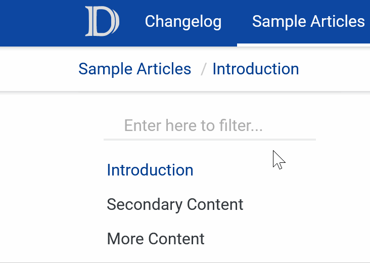

Changelog
Version 1.0.0 🥳 - June 7th 2023
- Added support for the modern docfx template, including:
- Light and dark mode.
- Simplified color customization.
- Improved hover effects.
- Updated styles to new material theme: https://m3.material.io/get-started.
- Previous material template renamed to material-classic.
- Removed the need for the
head.tmlp.partialin material-classic, now only themain.cssis needed.
Version 0.5.1 - June 5th 2023
- Fixed
head.tmlp.partialto work with updated default template.
Version 0.5.0 - Aug 27th 2020
- Updated textbox style with rounded corners and minor transition tweaks.
- Fixed hover on hamburger menu (small screens).
Version 0.4.0 - May 19th 2020
- Usability improvements and minor style changes in textboxes.

Version 0.3.1 - January 13th 2020
- Minor update in styles and shadows.
Version 0.3.0 - December 2nd 2019
- Added easy customization of header and link colors.
Version 0.2.0 - February 1st 2019
- Added material theme for the
note|warning|cautionblockquotes. - Updated syntax highlight styles.
Version 0.1.0 - January 31st 2019
- First release of the DocFX Material theme